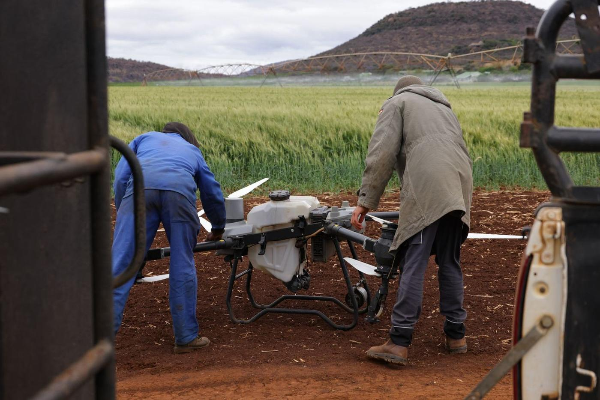
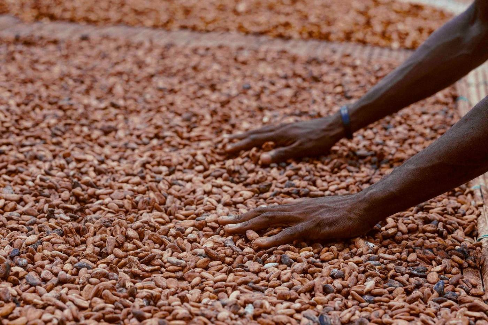

Applications mobiles hors-ligne
Les agents saisissent les données à la source, dans la plantation, sans attendre le réseau.
Impact : fin des fiches papier perdues et des ressaisies.
Cartographie, satellites, intelligence artificielle, capteurs, traçabilité, paiements mobiles : la technologie rend nos filières plus productives, plus transparentes et plus rémunératrices. Nous la mettons au service des producteurs, des coopératives et des exportateurs.

Drone agricole en préparationHuit technologies que nous maîtrisons, et ce qu'elles apportent concrètement aux acteurs des filières.
Les agents saisissent les données à la source, dans la plantation, sans attendre le réseau.
Impact : fin des fiches papier perdues et des ressaisies.
Chaque parcelle est délimitée, mesurée et reliée à son producteur sur une carte.
Impact : des superficies réelles et une base d'approvisionnement maîtrisée.
Suivi du couvert forestier, de l'état des cultures et des changements d'usage des terres.
Impact : la preuve de non-déforestation, vérifiable à distance.
Prévision des rendements, détection des maladies sur photo, analyse des risques.
Impact : anticiper la campagne au lieu de la subir.
Météo locale, humidité des sols, conditions de stockage mesurées en continu.
Impact : moins de pertes après récolte, une meilleure qualité.
QR codes, registres sécurisés et bilans de masse du producteur jusqu'au port.
Impact : chaque sac relié à son origine.
Paiements tracés, primes versées sans espèces, historiques exploitables pour le crédit.
Impact : des producteurs payés plus vite et en sécurité.
SMS, messages vocaux en langues locales et assistants WhatsApp.
Impact : les bonnes pratiques au bon moment, à grande échelle.
Une architecture de bout en bout, conçue pour fonctionner là où le réseau s'arrête.
Fiche producteur et polygone saisis sur le terrain, sans réseau.
Envoi automatique et chiffré dès que le téléphone capte.
Doublons, polygones incohérents et valeurs aberrantes détectés.
Tableaux de bord par coopérative, zone et campagne.
Rapports pour acheteurs, certificateurs et bailleurs.
Chaque solution se déploie seule ou s'intègre à une plateforme agritech complète.

Nos agents relèvent les contours de chaque plantation au GPS, directement dans l'application. Les superficies sont calculées automatiquement et chaque parcelle est rattachée à son producteur.

Du producteur à la coopérative, puis au magasin et au port, chaque transaction est enregistrée. Un QR code par sac ou par lot permet de remonter à l'origine en quelques secondes.
Nous transformons vos données terrain en dossier de conformité solide : analyse du risque de déforestation, cohérence des volumes, documents prêts pour les audits.

Un outil simple pour gérer membres, achats, primes et paiements. Les producteurs savent ce qu'ils ont livré et ce qu'ils ont reçu.

Nous concevons les questionnaires, formons les enquêteurs, supervisons la collecte et livrons des données propres, analysées et prêtes à présenter.

Des outils numériques pour les systèmes de suivi et de remédiation du travail des enfants (SSRTE / CLMRS), conçus avec des praticiens de la protection de l'enfance.
Nous combinons imagerie satellite, modèles d'apprentissage automatique et historiques de campagne pour anticiper plutôt que constater.
Ces solutions sont réunies dans Sankora, notre plateforme de traçabilité et de conformité RDUE : vos agents collectent sur le terrain, vos équipes pilotent depuis le bureau, vos acheteurs reçoivent des données vérifiées.
Illustration d'interface, données fictives.
Le règlement européen contre la déforestation (EUDR) impose de prouver l'origine de chaque lot de cacao, café, hévéa, palmier à huile, soja, bois ou bovins mis sur le marché européen.
Avant l'application aux grands et moyens opérateurs, le 30 décembre 2026. Micro et petites entreprises : 30 juin 2027 pour la plupart des produits.
5 questions, 2 minutes. Un score indicatif et des recommandations immédiates.
Les parcelles de vos producteurs sont-elles toutes géolocalisées (point GPS, ou polygone au-delà de 4 ha) ?
Pouvez-vous relier chaque lot vendu aux producteurs et aux parcelles d'origine ?
Avez-vous vérifié l'absence de déforestation après le 31 décembre 2020 sur ces parcelles ?
Vos données producteurs sont-elles numériques, à jour et centralisées dans un seul outil ?
Pouvez-vous fournir un dossier de diligence raisonnée à un acheteur qui le demande demain ?
Chaque filière a son calendrier, ses acteurs et ses exigences de marché. Nos outils s'adaptent à votre réalité.
Traçabilité, EUDR, certification, protection de l'enfance.
Origine des lots, qualité, cartographie.
Suivi des plantations et traçabilité vers l'usinier.
Planteurs villageois et traçabilité vers l'huilerie.
Achats, contrats producteurs et preuve d'origine.
Achats, qualité des noix et gestion des stocks.
Registre producteurs, intrants et crédits de campagne.
Groupements, accès au marché, suivi de projets.
En 45 minutes, nous analysons votre chaîne d'approvisionnement et vous proposons une feuille de route concrète.